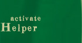
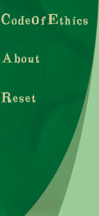

Previous situation: You have submitted the project and informed the HeWell Alliance of the error in the system. They have decided to follow your advice about what to do with the system.
Your choice: You advised that HeWell should deploy the system since you felt that the existing glitch did not warrant the effort needed to remove it.
After informing HeWell that you feel the glitch will not cause any major problems with system performance and would be more cost effective to leave into the system you move on to other projects that QCA has. After the system has been running for six months HeWell must pull the plug on it. The system has progressively begun to report more and more false emergencies and since every time emergency personnel are dispatched the subscriber is charged a fee many subscribers have dropped the service. HeWell tried offering a cut-down version of the service, one minus the automatic emergency response, but cannot attract enough customers. HeWell has contacted QCA and informed them of the advice that you provided them with. Your supervisor calls you to the office and proceeds to tell you how you have hurt the reputation of QCA and how you have violated the code of ethics QCA subscribes to and company policy. After your supervisor is finished telling you of all the trouble you have caused you are also informed that you are fired.
The Ethical Simulator wishes you luck in the unemployment line.